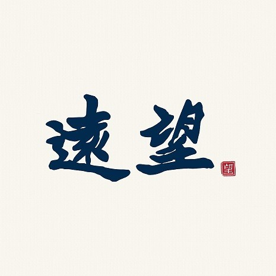
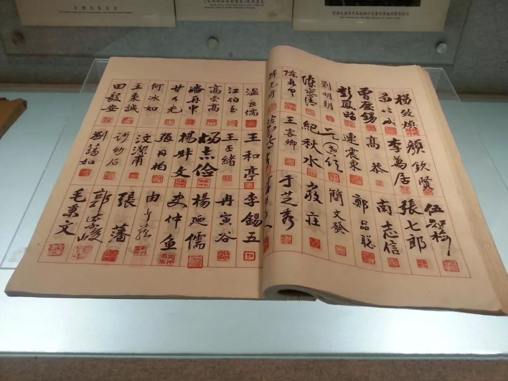
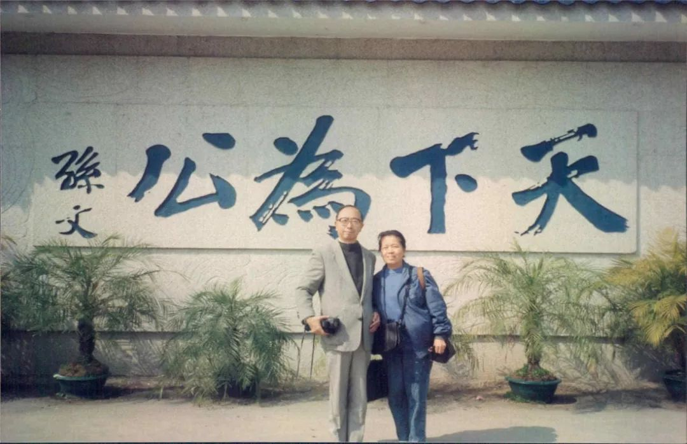

学人专访|胡佛：台湾因“台独”而道德沦丧
收录于合集
以下文章来源于珊闵远望 ，作者遠望
 珊闵远望 .
立足台湾，胸怀中国，远望天下——《远望》创刊于1987年3月，是台湾最老牌的统运刊物。宗旨是：发展统一理论，宣扬统一理念，推动统一运动。有志之士，盍兴乎来？
文章来源： 本文刊载于《远望》2018年10月号（总361期）。《远望》创刊于1987年3月，是中国台湾地区最老牌的统运刊物。
采访者 ：石佳音和简皓瑜。
记录整理： 简皓瑜。
石佳音 ：中国文化大学政治学系助理教授，胡佛院士关门弟子；
简皓瑜 ：致理科技大学通识中心讲师。
编按： 这是石佳音与简皓瑜两位老师于今年春节期间（2月19日）对胡佛院士进行的一次访谈，主题是“台独”的前因后果。惜因人力所限，迟迟未能整理成文。在访谈中，胡老强调：对于“台独”，「我们应该深掘其痛处，讲出来，不要怕得罪人」；「“台独”是非常不道德的事。大陆要统一台湾，应就这方面予以谴责，站在道德的正当性上吊民伐罪，而不是用『台湾可以参加“一带一路”来改善经济』等等利益的要求促统。」不仅如此， 胡佛院士更在专访中详细论及国家认同与政治体制之间的关系并对西方所谓“普世价值”的进行了深刻批判。 从事政治科学研究的学人需要高度关注胡院士在专访第三段和第四段中的论证。 言犹在耳，哲人已逝！南宋文臣文天祥在其名作《正气歌》中写道：“哲人日已远，典型在夙昔。”政观同仁认为用此句来纪念胡佛院士可谓恰如其分。 胡院士精通法政，筚路蓝缕，率先在中国将统计学运用到政治分析中，推动中国政治学走向科学化和本土化。他身后留下了三支学脉，分别是政治学的科学研究，对宪法与宪制的坚决守卫以及毕生推动国家统一的爱国主义、家国情怀和人文关怀精神。 昨天12月25日是台湾光复节，是日本战败、台湾回归祖国73周年的日子，也是中国和平统一促进会成立30周年的日子。 政观同仁认为继承并发扬胡院士留下的三支学脉是对他本人最好的纪念，两岸中国人 为此 都要不懈努力。
一、认同本身就是道德的基础
远望：去（2017）年12月，您在接受《中评网》、《联合报》的采访时提到了“台独”的道德问题。可否请您进一步阐述？
胡佛： 今年1月，又有跨海行骗的电信诈骗集团被破获了，这次是在波兰华沙，里面有多达48名嫌犯属于台籍。赵少康在他主持的TVBS政论节目中就问：台湾为何会有这么多诈骗犯，一波又一波没完没了，而且里面很多是大学毕业的年轻人？来宾沈富雄直言：这种诈骗很符合台湾目前的价值性格。主持人请他进一步阐释，沈才忽然警觉此事不宜多谈。
台湾的道德风气、尤其政治上，已经越来越糟。电视上常可看到“独”派政客或学者公然说谎，譬如，吕秀莲声称《中华民国宪法》里没有“省”的存在。事实根本不是如此，宪法本文有关中央政府的第64、85、91、147、174条，以及所有涉及中央立法，地方执行的条款，如第107-109、111条，都有省一级的相关规范；第十一章地方制度第一节（第112-117条）还直接谈省。然而她哪里是不懂？是公然说谎！再如早些时候，彭明敏、李鸿禧公开在电视上说，台湾人没有参加《中华民国宪法》的制定，因为遇到台风。《联合报》记者随之打电话来，问我是不是真的？事实上，台湾代表像黄国书、谢娥、连震东等18人，于1946年11月9日至10日陆续赴南京国民大会报到，全员全程出席了制宪国大，黄国书还入选11月22日选出的大会主席团，直到12月24日完成制宪。这些只要查一查《国民大会实录》就能查到，怎可说制宪国大没有台湾代表参加？李鸿禧这位宪法学者难道不知事实真相？他就是欺骗台湾一般人，让台湾老百姓以为《中号民国宪法》与台湾没关系，是“外来政权”强加给台湾人的！

上图为制宪国大代表签到表；图中右页可见台籍代表颜钦贤、李万居、张七郎、高恭、南志信、连震东、郑品聪、刘明朝、吴国信、简文发、陈启清、纪秋水等人于11月9日的签到，谢娥、林连宗、洪火炼、林璧辉、郭耀廷的签到见同日他页。黄国书于次日签到。
不仅宪法问题如此。历史上，从马关议和到乙未之役的过程中，清廷千方百计避免或推迟台湾割日，当时台湾在中国人──从中央朝廷到士大夫──眼中之重要，明明绝非所谓「螟蛉子」；“二二八”事件中，明明是先有大量无辜外省人遭到本省人施暴，并且，若非美国借机炒作台湾地位问题，蒋介石为打「内战」，其实根本不愿调兵回台。但这些都遭独派有意忽略或刻意曲解。在战后台湾地位问题上，独派亦配合美国利益，独重《旧金山和约》并武断地加以片面解释，抹去《开罗宣言》、《波茨坦宣言》的共识。
类此例子不胜枚举。但台独政客硬拗、说谎，即使被揭穿了仍硬不承认。诈骗就是这样，得手为强，谎说久了便成真，我就诈骗又怎样？！
远 望：“台独”派为何这么爱说谎呢？
胡佛： 很简单，就是没道德，不相信道德的存在！
今天“台独”派标举着「自由」「民主」「人权」，从形式上看起来，似乎是用一个道德替代另一个原有的道德（中国统一、仁义礼智），实际上是对道德的破坏。
首先，从学术上来讲，道德是社会性的。人形成道德的基础，第一步在于我们的家庭血缘；家庭是个生命共同体，也是一个道德的团体。往外扩，我们认同祖先的来源，认同原乡宗族；宗族也是一个道德的团体。再外推，有我们的族群，例如汉族。再上升到了政治的领域，就是国家。当然，中国随着国家的扩大，历史酝酿、涵化的结果，里面族群也越来越多。但同样地，国家本身也既是一个生命共同体，同时还是一个道德的团体，而非仅只是势力的结合。中国这个传统上以宗族为基层社会组织、以儒家仁义礼智这个普世价值为共同文化认同基础的文明型国家，尤其如此。
如果一个人的父母在经济上没有钱，在社会上没有地位，身体也不好，甚至好赌，这个人是不是就不承认自己的父母了呢？如果父母贫穷，那么，基于道德，子女长大了就想办法挣钱给他；身体不好甚至残障，就送去就医；好赌，就劝诫、想方设法帮他戒赌。道德本来就有牺牲的意味在里面。家庭里，子女对父母做一些牺牲，父母对子女亦然；到了社会上，朋友之间也是互相帮助，诸如此类。
但回顾历史可知，台湾割日后，社会的道德便遭到严重破坏。首先，日本据台之初即大规模诉诸残暴的武力镇压。台民蜂起抗日，最终不敌，而坚决抗日者一批批惨烈牺牲，几年下来，台民逐渐被迫畏服于暴力的殖民统治之下。对一个台湾人来说，否认自己是谁（按：指中国人）、否认传统道德的正当性，比较容易屈从于现实，于是在许多人心里「道德」就部分地崩塌了。此外，日本人在台湾从小学开始施行爱日本的军国主义教育，不但强化了拳头的说服力，而且用爱日本来替代爱你原来的祖国。日本人一手拿包含鸦片在内的专卖权控制台湾利益分配的同时，一手不断把肺结核病、吸食鸦片、不卫生等等所有负面形象与中国紧紧关联起来，极尽所能地丑化中国、贬抑中国人，说你落后不文明是「二等国民」、「清国奴」，不是一个高尚、入流的人种。否定你的尊严，让你心里自卑得不得了，那你怎么办？好，做日本皇民，脱胎换骨，把祖宗（「清国奴」）的牌位集中起来烧掉，换上神宫大麻，把日本天照大神请回家，摆在原本摆放祖宗牌位的供桌上，免于做丑陋的「清国奴」！此即中国老话所说的「认贼作父」。日本人多管齐下，台民的认同与道德就这样遭到了严重破产。二战结束之际，台湾人、特别是上层的仕绅地主都已高度皇民化、回不来了，随着光复后日人的撤离，他们内心便开始矛盾。在他们眼里，中国人就是个落后不卫生、低劣不文明的民族，而我乃经过日本洗礼、比中国人要高尚的群种（虽是二等皇民），怎可被劣等的中国人统治？
譬如像蔡英文家里修祖坟，就把大陆原乡的地名都刮掉了，改成屏东枫港。不认祖先，那她家是从哪里来的？现在千方百计亲日、让台湾「再皇民化」，难道她是日本人吗？
他们既流着中国人的血统又引以为耻，所以不认同中国而恨不得脱离中国，有些人甚至想当日本人而甘为日本二等国民；但殖民政府已撤离台湾，日本已是另一个国家，客观事实上你就不是日本人。客观事实与意愿冲突，这就让一个人陷入了道德的冲突与矛盾当中。怎么办？既然现在日本想利用台湾而对台湾「友好」，那就找一条出路，说我是「台湾人」好了！当然，虽说是台湾人，其实心里崇拜日本、想当日本人的阴影还在。所以，就算要当台湾人，也只能是亲日、跟日本合作的台湾人，不准当亲中国、赞同回归祖国的台湾人。
远望：您是说，日本殖民统治台湾50年，破坏了原来台湾人的民族认同。而认同错乱之后，道德就失去了根基。所以，“台独”主张是台湾道德基础遭到破坏的结果；而 “台独” 当道又使得台湾全面道德解体。对吗？
胡佛： 对。认同本身就是道德，而其它的道德是在认同的这个基本道德之上建立起来的。日本统治台湾50年，断了台湾人的根，并把台湾引到了另一个方向，影响了整个台湾的是非观、羞耻观；“台独”派不承认自己是炎黄子孙，不认同中国为祖国，是道德破产的结果。道德破产，又一心反华，然后就说谎、硬拗出一堆似是实非的东西来。
然而，尽管找到了一条不当中国人的出路，但人格道德上的矛盾冲突卡在那里，让内心摆荡不定、始终有压力。所以许多“独”派人士既高唱“台独”，硬拗自己是台湾人而非中国人，却又不时会发出莫名其妙的情绪来，譬如，动不动就炸开，认为不受尊重，总之既自卑又自大。何至于要爆怒？因为痛苦。但何须痛苦？你根本就是中国人嘛！如果中国人不够好，你加进来一起努力就是了嘛！所以，这是他们自己先不自尊不自重、先自惭形秽使然。 他们就是这样一种人，我们应该深掘其痛处，讲出来，不要怕得罪人。
二、“台独”的根本问题是没有道德
胡佛： 但台湾现在很糟糕的是，我们以前还学点中国史，勉强对此有些修补；今天为了“台独”，不但“台独”政客带头说假话也无所谓、不认祖宗也无所谓，而且课纲的修订早就超过了道德底限，使道德的结构从最基本的认同开始出了问题。台湾整个社会的问题就出在这里！
不道德的说谎、诈欺，在“台独”夺权的过程中亦数不胜数。譬如，过去要求「政党退出媒体、校园、军队」的声浪一度很高，但自国民党势力于其中松动后，该呼声在“独”派里即消失不见，媒体、校园、军队摇身一变成为推动“台独”的打手、平台与工具。李登辉更是在他退出国民党后，直言不讳自己为推动“台独”而使过的种种奸巧手法。此外，民进党两度执政，不但未曾清算他们口中「白色恐怖」所倚仗的特务系统，更别说现在「转型正义」从未对日本殖民统治的大不义进行任何处理了。
**“台独” 在道德上越走越偏，尤其“独”派已第二度执政、并且是全面执政，致使台湾长期在台独当道的社会氛围与教育下，基本道德全然丧失，许多人已经是毫不知耻了。**孟子曰：「人不可以无耻。无耻之耻，无耻矣！」（《孟子．尽心（上）》）连羞耻心都阙如，是无耻之极。此所以诈骗集团一波一波的没完没了，里面大学毕业的年轻人也并不觉得诈骗有什么不对，只觉得被抓了倒霉。
最近两件事情有点意思。报载去年（2017）10月26日，台北市商业会理事长王应杰应邀出席台湾竞争力论坛时说：大陆经过30年翻天覆地的进步，今天有许多一、二线城市的发展都已超越台北；台湾很多没到过大陆的愚民、贱民，根本不知大陆有多进步。骂这些没到过大陆、不承认自己是中国人者为「贱民」，确实讲得太重。然而这么能吸引口水战与收视率的一件事次日虽有报导，接着的第二、第三天却都未再引起重大辩论。为什么？因为一旦辩论了，台湾人是不是因此沦为「贱民」就会成为一个议题。显然是绿营回避、闪躲掉了。
第二件，是王尚智在去年12月4日《中时》言论版上写的一篇文章。他说，如果用天道、地道、人道等等六道轮回的概念来比拟的话，那么可以说，随着“独”派当政以来，当今台湾社会已快要跟着政坛畜生们，一起沦落到只剩下「无知与喧哗的本能，相互吞噬破坏，最终毫无真正创造幸福的能力」的「畜生道」了。「畜生道」，话骂得很重，我想应会引起一些争论，就注意了两三天，结果绿营亦未回应。因为一响应，高举「自由民主」口号来嘲弄大陆的“独”派是不是「畜生」、“独”派执政是不是「畜生道」就会变成一个议题。王应杰、王尚智真敢讲，而绿营闪躲不敢回应，可见真正能打到“独”派痛处的，就是这些道德问题。
“台独”是非常不道德的事。大陆要统一台湾，应就这方面予以谴责，站在道德的正当性上吊民伐罪，而不是用「台湾可以参加“一带一路”来改善经济」等等利益的要求促统。一直以来，大陆花了很多时间、很多银子做这些利益要求 （《远望》编按：就在本采访结束后没几天，大陆又推出了「惠台31条措施」）， 其实都未打到“台独”的根本。（政观编按：在政观于今年5月20日推介的《耿曙 曾于蓁 于强：“银弹攻势”真的有用吗？来自台南学甲的个案研究》一文中，作者也指出大陆对台湾的“银弹攻势”虽然起到了一定成效，但是付出的成本过于高昂，而且还需要其他因素综合作用。）
三、 「 民主 」 「 自由 」 「 人权 」 只是“台独”借口
远望：就皇民化影响下成长的台湾老一辈以及皇民家庭而言，以上分析相当有解释力。同样地，对于习惯于“反共”教育而人口居于相对少数、某些甚至怀有原罪感的外省二三代，我们也不难理解其“台独”倾向及像陈师孟等的某些极端作法。这类“独”派年纪较长。但对现在台湾“天然独”的年轻世代而言，他们根本没有什么历史意识，因此其国家认同与历史没有多少关系。他们直接认同“独”派当道的环境下所灌输的所谓“普世价值”──西方的「民主」「自由」「人权」。“天然独”的年轻世代当中，许多人不但自认有坚定的道德理想性，而且积极投身“台独”运动，主动分工，彼此分享捍卫“普世价值”的革命感情，动力惊人。您怎么看这个问题？
胡佛： 是的，「统一」问题要能解决，除了认同之外，包括体制问题、西方价值等问题也应重新思考，建构完备理论。譬如，民主是不是普世价值？要怎样来保障谁的自由？民主、自由、人权与国家之间的关系是什么？以及，归根结柢，究竟为何要成立一个国家？
以前我也说过，思考民主是不是普世价值之前，首先我们必须知道： 政治体系是个立体的结构，一个政治体系可分为三个层次的问题：首先，底下最基础、最根本的一层，就是我们共建的国家──这个「群」包括谁、范围多大、谁是「我们」？其上，才有第二层──政府。最上面，第三层，才是各项政策。 不管我们对孙中山怎么看，他把政治问题分为「民族」、「民权」、「民生」三大问题来分析，是非常正确的。

上图为多年前胡佛院士夫妇在广东翠亨村孙中山故居前留影。
今天台湾、香港很多人面对大陆，就说大陆没有民主、自由、人权，我不和你一家。姑不论事实如何，我们首先必须清楚： 民主、自由、人权是政治体系里政府层次以上的问题，与国家统一这个最为基础的问题不是一回事。 譬如说， 民主与否，讨论的是公职人员如何产生以组成政府的方式、程序，以及公权力的运作能否受到老百姓监督的机制，这都属于政府层次的问题。 但 「公」权力的组成及运作的前提首先必须要有「公」，也就是整体老百姓结合成的「国家」；政府乃架在国家这个基础的大盘子上，是配合国家的存在而生，主要职能是为国家整体来服务的，因此首先必须解决国家这一层次的问题。国家要凝聚起来，国家的结构要安定下来，不能四分五裂，然后我们才谈得上政府的组成、政府权力的运作，才能去追求国家的发展以及其他方面的价值。 我一个香港朋友说要靠选举来建国，我就问他：你不过是选一个政府组织，为什么变成选国家、分裂国家了呢？
从另一个角度来说，究竟为何要成立一个国家？不就是为了整体老百姓的福利吗？ 一个国家内部统一，没有谁能见缝插针，对外独立自主，这何尝不是一种「群」的自由、社会自由？反之，国家四分五裂了，个人又如何有真自由？所以国家统一，让「群」的自由、社会自由获得保障，还必须是个人自由、百姓福利的前提。 否则像南斯拉夫，分裂后境内不断动乱、发生大屠杀，然后又再分裂下去；这么多年过去了，昔日的强国大国如今仅剩小国林立，而且仍然动荡。 连哪些人是构成「我们」（国家）这个生命共同体、道德共同体都不确定，政府又由谁组成、为谁服务、保障谁的权益？
接着， 政府是要为民服务的。政府这个层次上，最要紧的是有效能地制订、施行公共政策。换言之，这个层次追求的是效能政府、讲求善治，所以中国人主张「民本」；至于政府的形成与监督是否经由民主的程序，则非最重要的事。
今天很多人面对大陆就洋洋得意说台湾有自由民主。民主就最好吗？ 台湾有什么自由民主？不过就是选举、搞民粹！ 当选举搞成社会严重分裂的「民主内战」，当选举变成政客卸责的方法、候选人竞相讨好选民而债留子孙的原因，当大陆许多发展已将台湾远远抛在脑后，台湾政坛口水当道而民主失能，反倒是我们该去检讨民主选举与台湾沦落的关系了。 又有人说：大陆有官二代的问题，可见没有（高层领导人层次的）民主（选举）就是不好。然而我们在报上常可看到， 台湾的选举政治里，官二代及政治世家又何尝不普遍？其实这个现象在实行民主选举的各国皆然。
选举要看作用。民众并非人人都有平等的素质、一样的智慧，直选有时就很难进行。 所以英国在二战以前，剑桥及牛津的学生在选举时便具有较大权重，能投两票，这是有意识地不走民粹的道路；前新加坡总理李光耀还在世时，甚至主张只开放给40岁以上的公民来决定政府人选，不要让社会经验不足、对公共事务一般也兴趣不大的年轻人来选举。对于国家最重要的领导人，英国不采直接选举，而是间接选举；美国联邦制加上选举人票制度，也使得直选对于总统选举的负面冲击相对较小。此外， 选举只是个方法，不能保证选出最好的、真正为民服务的能人。 像现在美国选出一个从无执政经验、主张白人至上的特朗普出任总统，还是凸显了民主体制易致民粹操作的问题，就引起美国学术界对于民主体制不少的省思。而美国为何总是鼓动它想搞垮的国家实施民主选举、尤其是直接选举，更是耐人寻味。总之， 民主制度只是选举公职人员的一种程序，或监督其施政的一种手段；要说民主选举就是最好的制度选择，老实说不可能。
民主制度里民粹主义的问题，渐渐地大家知道值得忧虑了。前两天我看到电视报导说，现在大家担心的是，在各国发生的这些游行抗议的运动中，往往找不出一个领导人或领导的组织，社会在这样的动乱里，形成不了一个有制度、有效能的反对团体，而只有无效能而且不断循环的动乱。像利比亚，就逐渐被一个个军头所控制，最终国家散掉了；现在利比亚已不是一个统一的国家，欧盟、北大西洋公约组织对其亦已完全束手无策，还谈什么民主？
中国传统体制是菁英治理，经由科举考试让贤能上来；尽管一治一乱，基本上为「超稳定结构」，所以历史上中国比世界其他任何文明都相对稳定、和平许多。这其中应还有些值得参考之处。
四、不同文化的道德之间 实有高下
胡佛： 再说到自由，亦然。我要有自由，你也要有自由，但哪能有一个绝对的自由存在？讨论「中国模式」的大陆学者张维为来台，跟我论及自由的问题时，我就说：「西方的价值奠基于个人的自由之上，讲究个人有个人的价值、个人要自我实现。这些我都同意。但问题是：你有价值，我难道没有？如果你的自我实现影响到我了，怎么办？所以， 没有绝对的个人自由 ；从整个『群』来看，个体绝对的自由就是放纵，你有自由我就没有了。 」所以我告诉张维为：「我们不要讲个人自由、个体主义；我们应讲『人人主义』，主张每个人都有他的人格、他的前途，不能因为自己的人格、前途，就摧毁他人的人格、前途，二者之间应该取得平衡。虽然『我为人人，人人为我』实践起来很困难，但这才是我们应该追求的价值。」而「人人主义」，就是儒家所说的「己所不欲，勿施于人」。
像特朗普这样的西方人犯了一个大毛病，就是觉得自我是神圣的。以前美国这个国家的本钱粗，每个人基本上生活无虞，要什么便可做什么；现在不行了。但西方在主张「个人是神圣的」这个观念基础上，慢慢就发展出「我个人的利益是神圣的」，随之，「我国家的利益也是神圣的」。于是，西方人为其自身的国家利益而卖鸦片烟给中国人抽，有何不可？谁叫你要抽，谁叫你自己要堕落，不是吗？许多西方人就拿这一套自圆其说，甚至主动设下许多陷阱，压制包括我们东方民族在内的其他民族。
现在特朗普与美国人的态度就是：谁管你中国大陆主张台湾是中国人的？反正我美国人的利益、我美国的国家利益是神圣的；台湾对我美国的国家利益来说有战略价值，有我美国的国家利益存在，台湾就由我美国来控制，就沦为我美国的附庸、殖民地，你能怎样？！
美国这些帝国主义的观念，由其绝对的个体主义的观念所发展。只要对他神圣的个人利益好、对他神圣的国家利益好，就是把你榨干了也干，他无所谓。 但现在中国逐渐强大起来，说不可如此。你美国有国家利益，我中国岂无自己的国家利益？！不但有，台湾原本就是中国国家利益所在，而且现在“台独”势力的崛起还有你在背后支持的因素在，中国的国家利益是被你以自己的国家利益为名强占不还的，当然不行！对此，帝国主义国家自然不愿接受，毕竟这是从观念开始就无法妥协了。美国不是轻轻安抚就能处好的。
这里附带一说，“独”派难道不知道美国要利用你来牵制、消耗你的祖国，不知道美国居心叵测吗？甘为豺狼附庸还回头来伤害祖国同胞，当然非常缺德！ 台湾先天不良，后天失调，加上美国帝国主义的介入，今天已是个相当不正常的变态社会。 前面说到，今天台独派标举着「自由」「民主」「人权」，从形式上看起来，似乎是用一个道德替代另一个道德，实际上是对道德的破坏。 “台独”、“港独”现在最严重的问题，就是不愿好好分开「国家」、「政府」两个不同概念，坚持国家就是政府、政府就是国家，并企图以争 「民主」为借口，达到“国家独立”的目标。他们自欺欺人，因其真正的目的在于独立，他们先规定了我不跟你一个群，我的国家我的政府就是不要跟你中国有关系。「民主」、「自由」、「人权」只是幌子。
所以， 不论是为了统一、为了中国的国际空间、或为整体中国的长治久安，我们都应检讨西方的思想观念与体制，包括上述美国的民粹、白人至上主义、美国优先等等问题，并把中国自己好的思想观念组织起来，建构出一套理论，才能从根本上解决中国的统一问题。
**
**
上图为2009年胡佛院士受邀参加新中国成立60周年阅兵观礼照片。
感谢石佳音教授和《远望》杂志授权！


“广告点一点，也是支持学术公益 ”
”